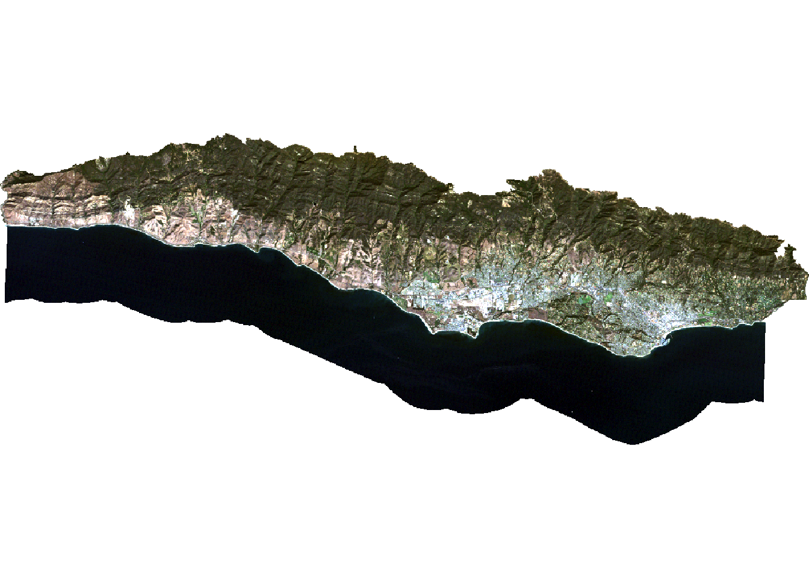

Applying Supervised Machine Learning to Landuse Cover in Santa Barbara, CA
Overview
Humans have been altering the natural world for centuries through agriculture, farming, development, recreation, etc. The impacts of landuse change have become critical to understand as evidence shows that it contributes significantly to climate change and is responsible for ecological degredation globally.[^1] Monitoring the distribution and change in landuse types can help us understand the impacts of climate change, natural disasters, deforestation, urbanization, and much more.
Dale, V. H. (1997). The relationship between land‐use change and climate change. Ecological applications, 7(3), 753-769.
Determining land cover types over large areas is a major application of remote sensing because we are able to distinguish different materials based on their spectral reflectance. In other words, remote sensing has opened up new doors to study land use change by looking at different proportions of light that it reflects up to satellites. By utiliizng remotely sensed imagery, we can classify landcover into classes or groups that allow us to understand the distribution and change in landcover types over large areas. There are many approaches for performing landcover classification – supervised approaches use training data labeled by the user, whereas unsupervised approaches use algorithms to create groups which are identified by the user afterward.
Objective
In this analysis, I used a form of supervised classification, a decision tree classifier, to predict landuse cover in Santa Barbara, California. Decision trees classify pixels using a series of conditions based on values in spectral bands. These conditions (or decisions) are developed based on training data. Here, I created a land cover classification for southern Santa Barbara County based on multi-spectral imagery and data on the location of 4 land cover types:
- green vegetation
- dry grass or soil
- urban
- water
Summary
My approach to this analysis can be summed up in 5 steps:
- Step 1: load and process Landsat scene data
- Step 2: crop and mask Landsat data to study area (Santa Barbara)
- Step 3: extract spectral data at training sites (subset of parcels within Santa Barbara)
- Step 4: train and apply decision tree classifier
- Step 5: plot results
Data
Landsat 5 Thematic Mapper
Data was obtained from Landsat 5, including 1 scene from September 25, 2007. The specific spectral bands being used are: 1, 2, 3, 4, 5, 7 from the collection 2 surface reflectance product.
Study area and training data A polygon representing southern Santa Barbara county was used as the overall study site. I also used polygons of regions within Santa Barbara representing training sites, including character string with land cover type. The decision tree derived from the training data is then applied to the entire Santa Barbara county polygon to create predictions of landuse cover for the whole region.
Workflow
Process data
Load packages and set working directory
Because this project required working with both vector and raster data, I used both sf and terra packages in my workflow. To train our classification decision tree and plot the results, I used the rpart and rpart.plot packages.
Load Landsat data
First, I created a raster stack based on the 6 bands I worked with. Each file name ends with the band number (e.g. B1.tif). Band 6 corresponds to thermal data, which we will not be working with for this analysis, so it was not included in the data. To create a raster stack, I made a list of the files that I wanted to work with and read them all in at once using the rast function. The names of the layers were then updated to match the spectral bands and plot a true color image to see what we’re working with.
code
# list files for each band, including the full file path
filelist <- list.files(file.path(data, "landsat-data/"), full.names = TRUE)
# read in and store as a raster stack
landsat <- rast(filelist)
landsat
# update layer names to match band
names(landsat) <- c("blue", "green", "red", "NIR", "SWIR1", "SWIR2")
landsat
# plot true color image
plotRGB(landsat, r = 3, g = 2, blue = 1, stretch = "lin")Load study area
I wanted to constrain the analysis to the southern portion of the county where there was training data, so I read in a file that defines the region of interest (ROI). I made sure that both CRS from the shape file and the Landsat data matched.
Crop and mask Landsat data to study area
Next, I cropped and masked the Landsat data to the study area. This reduced the amount of data that needed to be worked with and therefore saves computational time and energy. Furthermore, I removed objects that I no longer was going to be working with using the rm() function to save space (optional).
code
# crop Landsat scene to the extent of the SB county shapefile
landsat_cropped <- crop(landsat, SB_county_south)
# mask the raster to southern portion of SB county
landsat_masked <- mask(landsat_cropped, SB_county_south)
# remove unnecessary object from environment
rm(landsat, landsat_cropped, SB_county_south)
plotRGB(landsat_masked, r = 3, g = 2, blue = 1, stretch = "lin")Convert Landsat values to reflectance
Next, I converted the values in the raster stack to correspond to reflectance values. To do so, I first removed erroneous values and applied any scaling factors to convert to reflectance. In this case, I worked with Landsat Collection 2. The valid range of pixel values for this collection is 7,273-43,636, with a multiplicative scale factor of 0.0000275 and an additive scale factor of -0.2. So I reclassified any erroneous values as NA and updated the values for each pixel based on the scaling factors. Now the pixel values should range from 0-100%.
code
summary(landsat_masked)
# reclassify erroneous values as NA
rcl <- matrix(c(-Inf, 7273, NA,
43636, Inf, NA),
ncol = 3, byrow = TRUE)
landsat <- classify(landsat_masked, rcl = rcl)
# adjust values based on scaling factor
landsat <- (landsat * 0.0000275 - 0.2)*100
summary(landsat)
# plot true color image to check results
plotRGB(landsat, r = 3, g = 2, b = 1, stretch = "lin")
Classify image
Extract reflectance values for training data
Here, I loaded in the shapefile identifying different locations within the study area as containing one of the 4 land cover types. I then extracted the spectral values at each site to create a data frame that relates land cover types to their spectral reflectance.
code
code
# extract reflectance values at training sites
training_data_values <- extract(landsat, training_data, df = TRUE)
# convert training data to data frame
training_data_attributes <- training_data %>%
st_drop_geometry()
# join training data attributes and extracted reflectance values
SB_training_data <- left_join(training_data_values, training_data_attributes,
by = c("ID" = "id")) %>%
mutate(type = as.factor(type))Train decision tree classifier
To train the decision tree, I first needed to establish a model formula (i.e. what the response and predictor variables are). The rpart function implements the CART algorithm. The rpart function needs to know the model formula and training data you would like to use. Because I was performing a classification, I set method = "class". I also set na.action = na.omit to remove any pixels with NAs from the analysis.
To understand how the decision tree will classify pixels, I first plotted the results. The decision tree is comprised of a hierarchy of binary decisions. Each decision rule has 2 outcomes based on a conditional statement pertaining to values in each spectral band.

Apply decision tree
After making the decision tree, I applied it to the entire image. The terra package includes a predict() function that allows you to apply a model to the data. In order for this to work properly, the names of the layers needed to match the column names of the predictors I used to train our decision tree. The predict() function then returns a raster layer with integer values. These integer values correspond to the factor levels in the training data. To figure out what category each integer corresponded to, I then inspected the levels of the training data.
Plot results
Finally, I plotted the results to check out the land cover map.
Conclusion
This analysis highlights the power of using supervised classification to gain insight of land use over on a large scale. While this technique has some challenges, it is a powerful tool that can be used in the environmental field to understand not just land use cover but a wide variety of environmental topics. It is important that these practices are also ground truthed to ensure the predicted model results are accurate.